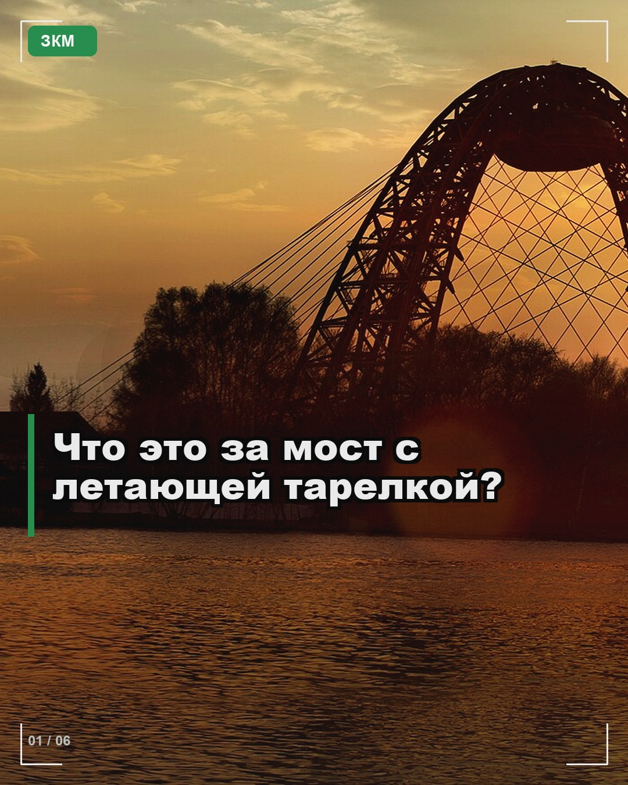
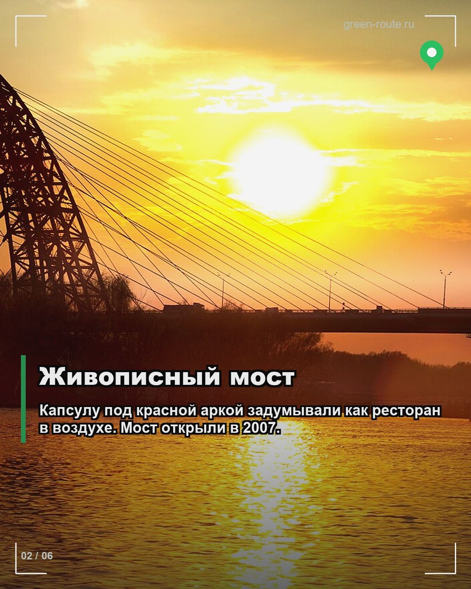
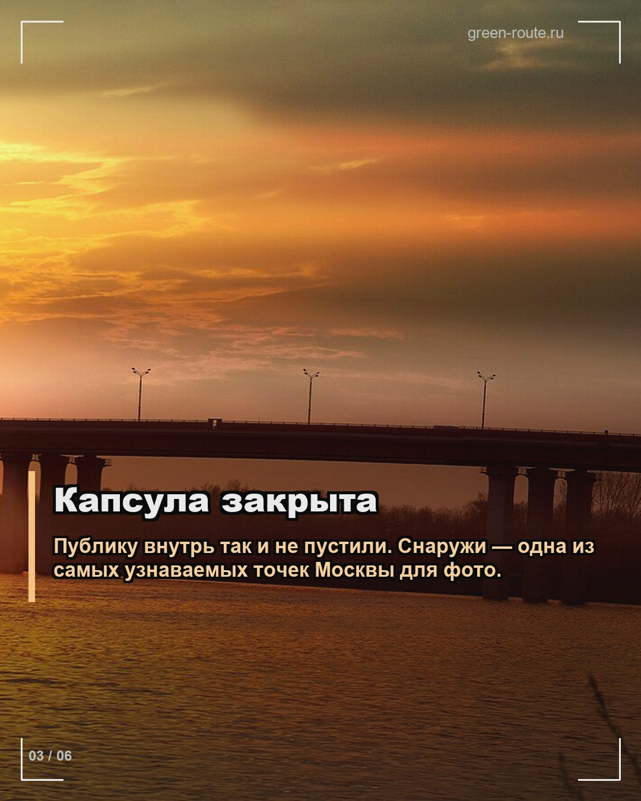
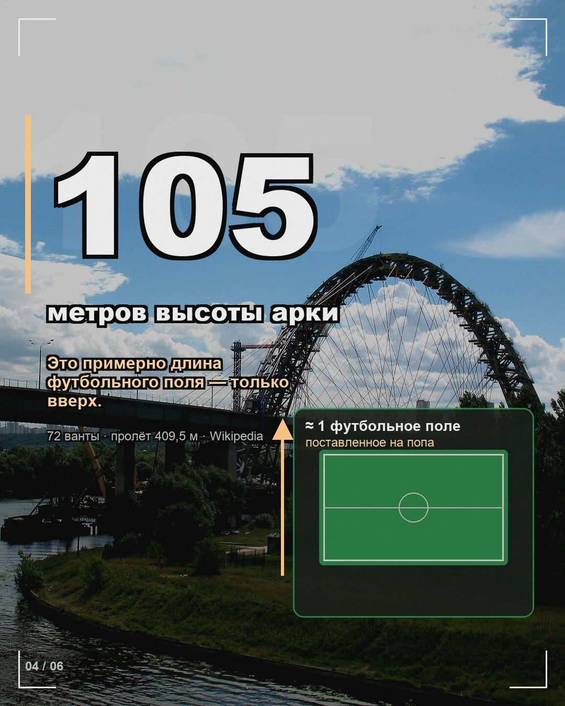
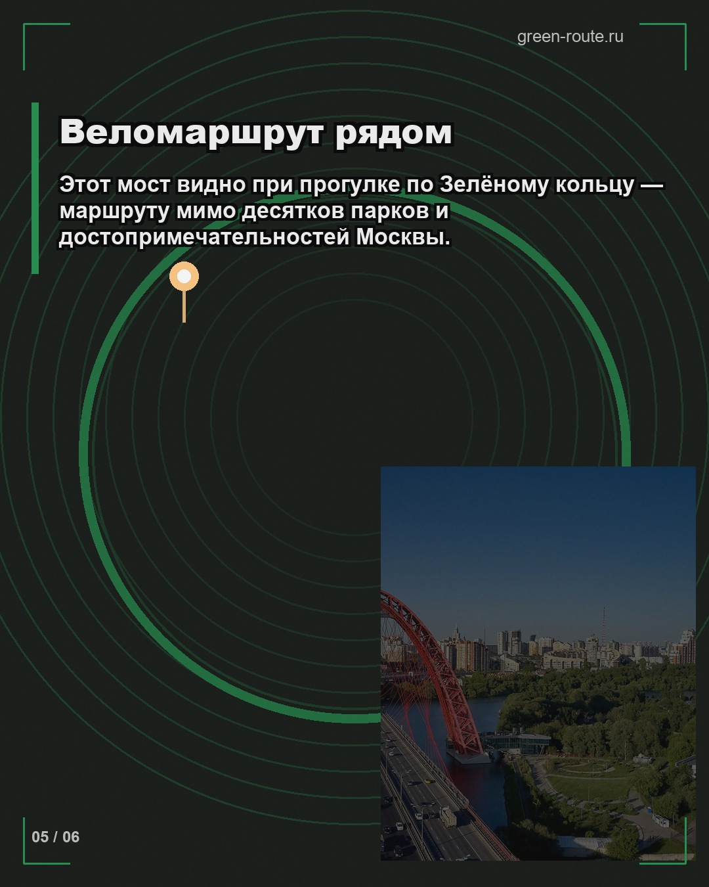
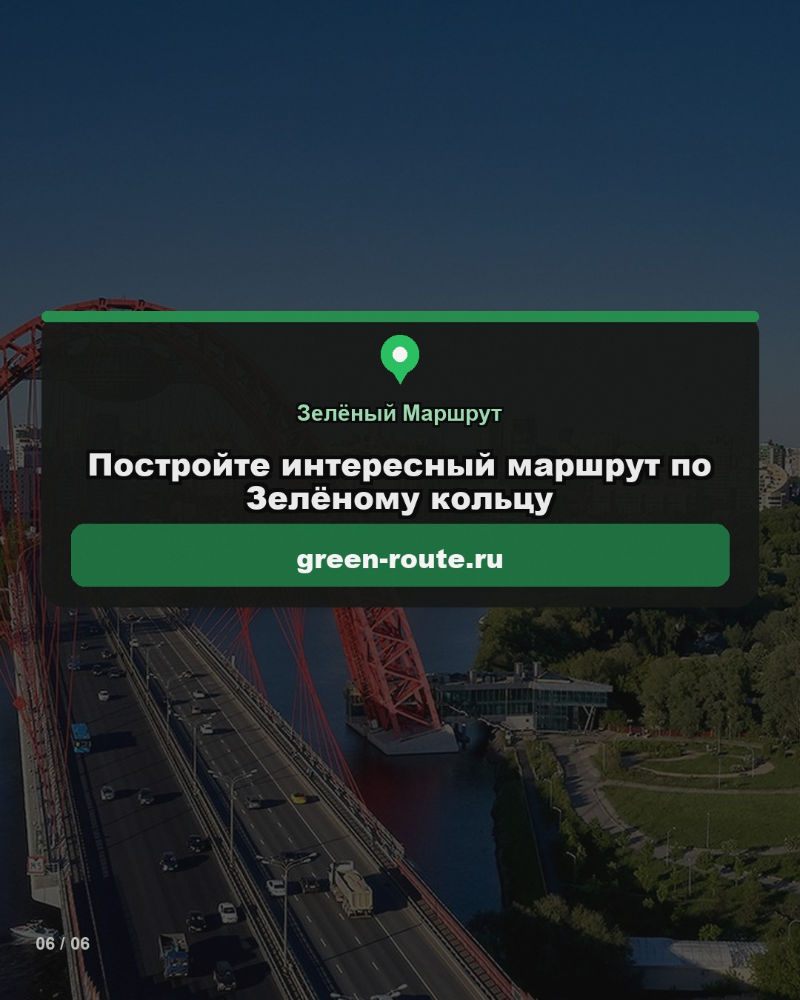

Без «свайп» · капсула закрыта (факт) · 105 = высота + сравнение с полем ·
слайд 5 объясняет Зелёное кольцо · CTA по центру · разные кадры 4–6.
История: docs/instagram/stories/zhivopisny-flying-saucer.md





